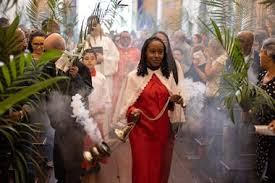

O Significado da Páscoa
A Páscoa é uma das celebrações mais importantes do calendário cristão, comemorando a ressurreição de Jesus Cristo. Este evento simboliza a renovação, a esperança e a vitória da vida sobre a morte, sendo celebrado por milhões de pessoas em todo o mundo com missas, encontros familiares e diversas tradições culturais.
Além do seu significado religioso, a Páscoa também incorporou costumes populares ao longo dos séculos. O coelho da Páscoa e os ovos de chocolate são símbolos amplamente reconhecidos, representando fertilidade e renovação. Cada país adapta essas tradições de acordo com sua cultura, criando celebrações únicas e especiais.
Neste site, você poderá conhecer como a Páscoa é celebrada em diferentes partes do mundo. Explore as páginas internas e descubra curiosidades, comidas típicas e costumes que tornam essa data tão especial em cada país.

